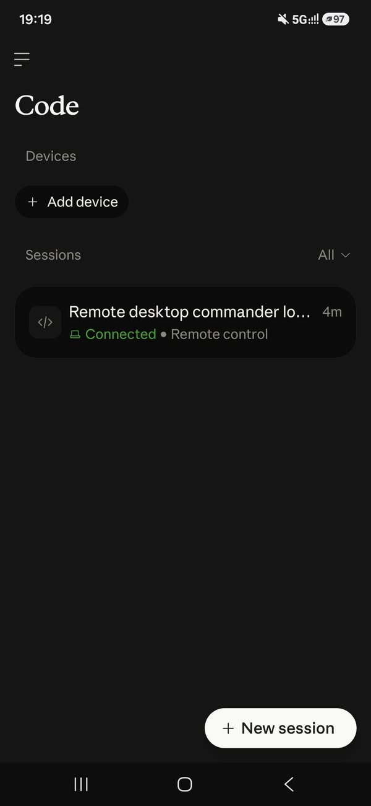

Facebook｜Claudex + Remote Desktop Commander：把跨模型審查與遠端電腦 MCP 分開看

一句話摘要
這不是兩個能互相替代的工具：Claudex 解決「計畫與程式碼是否被不同模型挑戰過」，Remote Desktop Commander 解決「AI 能否從遠端連回指定電腦執行工具」；把兩者一起用時，應先建立最小權限與可撤銷的遠端存取邊界。
這則貼文可確認的內容
Facebook 公開頁面可讀到標題「Claude不夠用 Codex也不夠用 你們嘗試Claudex+RemoteDesktopCommander了嗎」。附圖是 Claude Code 行動介面的 Code 頁面，顯示一個名稱截斷為「Remote desktop commander lo…」的 session，狀態為 Connected · Remote control；圖中沒有提供安裝指令或作者的額外操作文字。
因此，本文把社群提問與兩個專案的官方 README 分開記錄；不把截圖推論成官方支援範圍或安全保證。
Claudex：讓 Claude 與 Codex 交叉檢驗計畫
Claudex 是安裝在 Claude Code 專案內的開發外掛。其核心流程是：Claude 把需求整理成 `PLAN.md`，Codex 以不同角色提出對抗式審查，Claude 再修訂，直到沒有實質問題或到達回合上限。
- `/claudex:plan` 預設執行三輪：資深工程、資安／資料完整性、Ops／SRE。
- `/claudex:review` 會把 diff 的發現與建議寫入 `reviews/`；v1 為唯讀，不會直接修改程式碼。
- `/claudex:doctor` 可做安裝前置檢查，`/claudex:cancel` 與 `/claudex:rollback` 用於停止或清理迴圈。
- 它透過 Claude Code Stop hook 協調流程，宣稱錯誤時採 fail-open，避免使用者卡在 hook 迴圈。
官方 README 所列前提為 Claude Code、Node.js 18.18+、Codex CLI、Bash，以及可登入 Codex CLI 的 ChatGPT Plus／Pro／Team／Enterprise 帳號。每一輪會是一次完整的 Codex 計畫審查；README 估計預設三輪約 75–90k Codex tokens，實際可用量仍受帳號方案與速率限制影響。
Remote Desktop Commander：把遠端 MCP 接到實體電腦
Remote Desktop Commander 是 Desktop Commander 的 hosted remote MCP server，目前標示 beta。目標電腦需持續執行：
`npx @wonderwhy-er/desktop-commander@latest remote`
首次啟動會經 OAuth device flow 配對；AI 用戶端再連到 `https://mcp.desktopcommander.app/mcp`。官方 README 介紹 Claude.ai／Claude Desktop、Claude Code、ChatGPT、Cursor、VS Code 與 Gemini CLI 等連接方式。
可提供的能力包含讀寫／搜尋檔案、啟動與管理 terminal process、建立目錄、改寫 PDF，以及列出或關閉已配對裝置。這些操作以配對電腦的使用者權限執行，且只在 device agent 還在運行時可連線；停止 agent 或從 dashboard 撤銷裝置即可中斷存取。
為何兩者可以搭配，但不應混為一談
一種合理工作流是：用 Claudex 先把較高風險的變更計畫交由 Claude／Codex 交叉審查，再使用 Remote Desktop Commander 從手機或其他 AI App 連到指定開發機器執行後續工作。這能提升遠端工作彈性，但並不會自動降低電腦控制風險。
建議的最小安全做法：
- Remote device 使用獨立、低權限 OS 帳號或隔離的開發機，不要直接配對含 SSH key、密碼庫、瀏覽器 profile 與個人檔案的主帳號。
- 只在需要時啟動 `remote` agent；工作結束立即 Ctrl+C，並定期在 dashboard 撤銷不用的裝置。
- 對 AI App 帳號啟用 MFA；OAuth 連線與 AI 帳號一旦被接管，遠端工具可能以你的使用者權限執行。
- 在 Claudex 先用 `--rounds 2` 測試成本與品質，高風險架構、資安或資料遷移再提高回合數。
- 對任何由遠端 agent 建議的 shell、刪除、部署、外傳與金流操作，保留人類核准；跨模型審查不是存取控制。
原始與官方來源
- Facebook 原始貼文：https://www.facebook.com/share/p/1Tv4iJfdKU/?mibextid=wwXIfr
- Facebook canonical：https://www.facebook.com/groups/1224997379198346/posts/1396252808739468/
- Claudex（MIT）：https://github.com/promptadvisers/claudex
- Remote Desktop Commander 官方文件／issue tracker：https://github.com/desktop-commander/remote-desktop-commander
- Remote MCP endpoint：https://mcp.desktopcommander.app/mcp